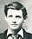
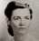
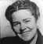
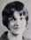
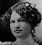
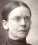

You can jump Forward to Through year 1919 , or 1920-1929 , or 1930-1939 , or 1940-1949 , or 1950-1959 , or 1960-2019 , or Walt's Say , or Beulah's Obit , or bottom of page ,
| Relation | Name | Born | Location | Died | Location |
|---|---|---|---|---|---|
| Father |  William Twyman Walton [FS Data] | 1878-09-22 | Hart County, KY | 1957-02-13 | Dallas County, TX, Buried at New IOOF Cemetery, Hamilton, TX |
| Mother | Ethel Irene (Embrey)(Price) Walton [FS Data] | 1879-04-12 | Coryell County, TX | 1969-08-02 | Fort Worth, TX, Buried at New IOOF Cemetery, Hamilton, TX |
| SELF | William Embrey Walton [FS Data] | 1902-10-28 | Hamilton Co., TX | 1989-10-13 | Ft Worth, TX, Buried at Laurel Land Memorial Park, Fort Worth, TX |
| Sister |  Aubrey Irene (Walton) Gilkes [FS Data]< | 1904-07-07 | Hamilton Co., TX | 1987-06-18 | Hamilton, TX, Buried at New IOOF Cemetery, Hamilton, TX |
| Sister | Annie Joy (Walton) Walton [FS Data] | 1906-01-26 | Hamilton Co., TX | 2000-12-10 | Wichita Falls, TX, Buried at New IOOF Cemetery, Hamilton, TX |
| Sister |  Louise M (Walton)(Holbrook) Bronstad [FS Data] | 1908-04-23 | Hamilton Co., TX | 1989-08-18 | Fort Worth, TX, Buried at St Olaf's Cemetery |
| Brother | Frederick Walton [FS Data] | 1909-09-22 | Hamilton Co., TX | 1915-05-05 | Hamilton Co., TX, Buried at Blue Ridge Cemetery, Hamilton, TX |
| Sister |  Ina Jo (Walton) Mapp [FS Data] | 1912-07-24 | Hamilton Co., TX | 2002-01-09 | Houston, TX, Buried at Sunset Memorial Gardens, Odessa, TX |
| Relation | Name | Born | Location | Died | Location |
|---|---|---|---|---|---|
| Father | [De Witt Talmadge Ragsdale [FS Data] | 1882-03-22 | Texas | 1905-08-25 | Texas |
| Mother | Leona Guthrie [FS Data] | 1880-08-31 | Dadeville, AL | 1968-06-30 | Comanche, TX |
| SELF | Pansy Marie Ragsdale [FS Data] | 1904-11-23 | Comanche, TX | 1956-01-16 | Fort Worth, TX |
| Brother | Eugene DeWitt Ragsdale [FS Data] | 1906-04-17 | Comanche, TX | {{dod}} | ? |
| Relation | Name | Born | Location | Died | Location |
|---|---|---|---|---|---|
| Father | Wyatt William Woody [FG Data] | 1884-03-30 | Mitchell County, NC | 1959-02-07 | Spruce Pine, NC |
| Mother | Lucreta Wise Woody [FG Data] | 1890-06-20 | [[BIRTH LOC]] | 1977-01-06 | Cane Creek Baptist Church Cemetery, Hawk, Mitchell County, NC |
| Brother | Oakley Woodey [FG Data] | 1910-10-14 | [[BIRTH LOC]] | 1982-01-15 | Cane Creek Baptist Church Cemetery, Hawk, Mitchell County, NC |
| Brother | Roe Woodey [FG Data] | 1913-02-28 | [[BIRTH LOC]] | 1984-05-?? | Cane Creek Baptist Church Cemetery, Hawk, Mitchell County, NC |
| Brother | Arthur Woodey [FG Data] | 1915-05-30] | [[BIRTH LOC]] | 2005-03-15 | Pleasant Grove Baptist Church Cemetery Greensboro, Guilford County, No |
| Brother | Lynn Robert Woodey [FG Data] | 1917-10-25 | [[BIRTH LOC]] | 1997-10-03 | New Providence Presbyterian Church Cemetery Raphine, Rockbridge County, Vir |
| Sister | Pearl Edith Woodey [FG Data] | 1919-05-18 | [[BIRTH LOC]] | 2007-11-13 | Saint Stephens Lutheran MO Synod Cemetery, New Hickory, Catawba County, NC |
| Sister | Merle Marie Woodey [FG Data] | 1922-11-01 | Hawk, NC | {{dod}} | Hickory, NC |
| SELF | Beulah Woody [FG Data] | 1925-04-26 | Kalmia, NC | 2019-07-23 | Cranfills Gap, TX |
| Brother | Ted Roosevelt Woodey [FG Data] | 1928-04-30 | Avery, NC | 2014-05-05 | Cane Creek Baptist Church Cemetery, Hawk, Mitchell County, NC |
[FG Data]: Find a Grave data: https://www.findagrave.com/
[FS Data]: Family Search data: https://www.familysearch.org
[LRF Data]: Linton Research Fund data: http://linton-research-fund-inc.com/
[Walt Data]: This site, Walts memories: https://gwbronstad.github.io/Walt-Kin/
| Relation | Name | Milestone | Location | Died | Location |
|---|---|---|---|---|---|
| First Wife | Pansy Marie Ragsdale [FS Data] | Born 1904-11-23 Married 1923-08-15 | Comanche, TX Comanche, TX | 1956-01-16 | Ft Worth, TX, Buried at Laurel Land Memorial Park, Fort Worth, TX |
| Daughter | Janetha June (Walton) Dunahoe [FS Data] [FG Data] | Born 1924-12-05 | Shive, TX | 2012-08-18 | Natchitoches, LA buried atMemory Lawn Cemetery, Natchitoches, LA |
| Son | William Embrey "Sonny" Walton Jr [FS Data] [FG Data] | Born 1926-10-11 | Fort Worth, TX | 1957-07-03 | Alberta, Canada, Buried at Stacy Memorial Cemetery, Devers, TX |
| Daughter | Nevlynn Ann "Nan" (Walton) Bland [FS Data] [FG Data] | Born 1932-05-15 | Ft Worth, TX | 2017-12-16 | Yoakum, TX, buried at Alexander Cemetery, Stratton, TX |
| Second Wife | Beulah (Woody) Walton [FS Data] | Born 1926-04-26 Married 1962-xx-xx | Kalmia, Mitchell Co., NC NC | 2019-07-23 | Ft Worth, TX, Buried at St Olaf's Cemetery |
| Daughter | Emily Joy Walton | Born 1963 | |||
| Son |  Paul Woody Walton Paul Woody Walton | Born 1965 |
Embrey's Father, William Twyman Walton, was part of a long line of Americans. The family of Reverend William Walton arrived in the year 1635 at Hingham, Massachusetts Bay Colony, British Colonial America.
Embrey's Mother, Ethel Irene was of a long line of Americans , some dating back to a 1635 voyage to Virginia.
Embrey was Louise’s only surviving brother. Frederick had died in childhood in a farming accident May 1915. Louise depended on Embrey in a number of ways. After Louise’s first husband, Marshall Holbrook died in 1933, Embrey helped her invest Marshall’s life insurance guarantee in a Fort Worth rental house where he could manage rent and maintenance while she carried on with her professional life in in one of the few professions then permitted to a woman. Teachin-g in public schools. Texas, rural texas.
The rental cushioned the rough patches that a single mom endured getting undergraduate college credentials to secure future teaching positions in first one rural school after another. (Eulogy, Buffalo Gap, Shive, Cranfills Gap, Keller). Eventually the rental property was sacrificed to grease the transition from rural Cranfills Gap into Urban Fort Worth (where Embrey lived.)
Where indeed, for a while, my father, Clyde lived. Shared upstairs domicile with another of Embrey’s Brother-in-Laws, Eugene Ragsdale.
C:\Users\gwbro\iCloudDrive\iDocuments\Family\WT_Walton_Family\William_Embrey_Walton.odt
Embrey' item 001
Through year 1919 . . . . . . . . . . . . . You can jump back to top of page , or Forward to 1920-1929 , or 1930-1939 , or 1940-1949 , or 1950-1959 , or 1960-2019 , or Walt's Say , or Beulah's Obit , or bottom of page ,
A couple of stories I remember him telling. The first was how he, aged 3 or 4, climbed up on the roof or windmill tower and would not come down till his mom made him French fried potatoes. I think he wrote that down but not totally sure.
The other was how he started playing piano. He said the girls [Aubrey, Annie, Louise and Ina Jo] got to go take lessons. He realized they got out of farm chores. So he told his dad that he wanted to play piano too.
1902-10-28
A son William Embrey Walton , is born to Will and Ethel.
1904-07-07
A daughter, Aubrey Irene Walton, is born to Ethel and Will.
1906-01-26
A daughter, Annie Joy Walton is born to Ethel and Will.
1908-04-23
A daughter, Louise Myrtle Walton, is born to Ethel and Will.
1909-09-22
A son, Frederick Walton, is born to Ethel and Will.
1910-04-15 United States Cesus
| Name | Sex | Age | Birth Yr. Est. |
Birthplace | Marital Status |
Race | Relation |
|---|---|---|---|---|---|---|---|
| William T Walton | Male | 31 | 1879 | Kentucky | Married | White | head |
| Ethel I Walton | Female | 28 | 1879 | Texas | Married | White | Wife |
| William E Walton | Male | 7 | 1903 | Texas | Single | White | Son |
| Aubrey I Walton | Female | 5 | 1905 | Texas | Single | White | Daughter |
| Annie A Walton | Female | 4 | 1907 | Texas | Single | White | Daughter |
| Louise Walton | Female | 1 | 1909 | Texas | Single | White | Daughter |
| Frederick C Walton | Male | 6/12 | 1910 | Texas | Single | White | Son |
1912-07-24
A daughter, Ina Josephine Walton , is born to Ethel and Will.
1915-05-14 Child [Frederick Walton] Meets Tragic Death
An accident which resulted in the instant death of Frederick Walton the little five year old son of Mr. and Mrs. Will Walton of Blue Ridge, occurred Wednesday afternoon at about 3:30 o'clock near the residence of W. O. O'Bannon, four miles from Hamilton.
The little boy was riding in a wagon in which his uncle, Tom Walton, was hauling a hay press. The child was standing near the press, when an upright lever caught in a low telephone wire, toppling over the press. It is supposed the child jumped from the wagon, the press falling out of the wagon on him, crushing him to death instantly.--Hamilton Herald.
Grandfather Will Walton said of Frederick,"We knew Fred was uncommon, he was always pleased with whatever we gave him or did for him. We had expected great things of such a disposition, but now he is gone."
The pain of this loss struck not only parents, siblings, Aunts and Uncles; the pain has become part of the patrimony of the next generation.
Mother took care that I, as a child, then later as an adult visited Uncle Frederick's grave. (You can visit too, vicariously, by clicking the link.)
Embrey' item 002
1920-1929 . . . . . . . . . . . . . You can jump back to top of page , or Through year 1919 , or Forward to 1930-1939 , or 1940-1949 , or 1950-1959 , or 1960-2019 , or Walt's Say , or Beulah's Obit , or bottom of page ,
1920-04-10 United States Cesus
| Name | Sex | Age | Birth Yr. Est. |
Birthplace | Marital Status |
Race | Relation |
|---|---|---|---|---|---|---|---|
| William F[sic] Walton | Male | 41 | 1879 | Kentucky | Married | White | head |
| Ethel I Walton | Female | 40 | 1879 | Texas | Married | White | Wife |
| William E Walton | Male | 17 | 1903 | Texas | Single | White | Son |
| Aubrey I Walton | Female | 15 | 1905 | Texas | Single | White | Daughter |
| Annie A Walton | Female | 13 | 1907 | Texas | Single | White | Daughter |
| Louise Walton | Female | 11 | 1909 | Texas | Single | White | Daughter |
| Ina Walton | Female | 7 | 1913 | Texas | Single | White | Daughter |
1923-08-15
Will and Ethel's son, William Embrey Walton, wed Pansy Marie Ragsdale.
1924-01-19
Will's Mother, Williamina America (Wood) Walton, died in Hamilton, TX.
1924-10-03 Hamilton Herald-Record
W. T. Walton, one of Hamiltor county's best citizens and a prosperous farmer, was a pleasant business caller in the Herald-Record office last Saturday afternoon. While here he informed us that his daughter, Miss Annie Walton had returned to John Tarleton College in Stephenville for her last year in that institution. Miss Aubrey Walton, who graduated from Tarleton last spring, will teach with her brother, Prof. Embrey Walton, in the Shive school this year. This family of young folks are ambitious and are attaining to great usefulness in their school work, and a legion of friends wish for their continued success and happiness.
This man was "bustin his buttons" with Fatherly pride. Wouldn't suffice to simply talk up his children to the fellows on the Hamilton courthouse square, or congenial congregants of his church. Nothing less than the entire literati in the reach of the Hamilton Herald would do.
And it was quite an achievement for each sibling; homework hours were sandwiched between farm chores and the limited availability of kerosene lamps and oil for night reading light.
And it was an achievement for Will and Ethel who could afford to send each child to school and continue to run the farm with a declining family work force.
1924-12-05
A lovely little daughter, Janetha June, has since December 5, been basking in the joyous love of her young parents, Mr and Mrs. W. Embrey Walton, who are at home this winter in Shive where the proud young father is principal of the school. The happiness of the young parents cannot be measured and all of their hosts of friends hope that their blessed companionship with the little daugter may grow in happiness as she develops into the various ages of childhood and after a while into womanhood, beautiful, gracious and pure. -- W. E. Walton
1926-10-11
Will and Ethel's second grandchild, William Embry Walton Jr, is born to Embrey and Pansy Walton in Fort Worth, TX.
1929-08-08
James Claibourne Walton, Embrey's double cousin, wed Mary Leone Patterson. Claibourne had to change church to Church of Christ to close the deal.
Well after Will's death in 1957, when the land was being divided among the siblings, Mother and I drove on the gravel road within the "ranch", land Will had used to graze cattle. It's an undulating section of land, covered in grass and live oak trees. At the 'top' of the section were rude shelter and feeder troughs.
WIll would feed the cattle frequently throughout the week; that let him check on his cattle, to see if any were injured or in calf and other such work of herdsmen. The road hugged the fencelines, wherever terrain and live oak clusters permitted, so as to ease the job of checking the fence.
But that day, Mother crept slower than usual along the rough rutted road, seeking Claibourne's shack. It took Claibourne long, isolated nights of wrestling with his soul before he could find a way to meet Leone's demand to change to her family's church.
At the time, I inferred Claibourne had built a retreat shack, but after having read Grace (Embrey) Eubanks account of James Monroe Embreys settling near Hamilton, " Later there were other small houses done on the ranch near Bear Creek--moving closer to town each time they were built", I now infer Claibourne squatted in an abandoned house/shack.
Context of Item 002
Embrey' item 003
1930-1939 . . . . . . . . . . . . . You can jump back to top of page , or Through year 1919 , or 1920-1929 , or Forward to 1940-1949 , or 1950-1959 , or 1960-2019 , or Walt's Say , or Beulah's Obit , or bottom of page ,
| Name | Sex | Age | Birth Yr. Est. |
Birthplace | Marital Status |
Occupation | Race | Relation |
|---|---|---|---|---|---|---|---|---|
| William E Walton[1] | Male | 27 | 1903 | Texas | Married | Stenographer Oil Well Supply | White | Head |
| Pansy M Walton | Female | 25 | 1905 | Texas | Married | ? | White | Wife |
| J June Walton | Female | 5 | 1925 | Texas | Single | ? | White | Daughter |
| W E Walton Jr. | Male | 3+5/12 | 1927 | Texas | Single | White | Son |
[1]Residence Place: Fort Worth, Tarrant, Texas, United States, House Number:1221 Carlock Street]
1930-12-07
Embrey's oldest uncle, 66 year old John Barrett Walton, dies of a "Heart Block" in Hamilton, TX, leaving a widow, Susie Walton.
1931-10-17 J-Tac, Stephenville, TX
Embrey. Walton, [John Tarleton College Class of] '21, is with the National Supply House, Fort Worth, Texas.
1931-07-19
Embrey's third sister, Louisa Myrtle Walton wed Marshall Holbrook in Wascom, TX.
1932-05-08
Embrey's nephew, Winnon Glenson Holbrook, is born to Louise and Marshall Holbook in Wascom, TX.
1932-05-15
Another daughter, Nevlynn Ann Walton, is born to Embrey and Pansy Walton in Fort Worth, TX.
1933-06-02
Embrey's brother-in-law, Marshall Holbrook dies in an automobile accident near Wascom, TX., leaving their 25 year old daughter, Louise a widow with a 1 year old grandson, Bobby Holbrook.
Louise's tragedy mirrors the tragic event of her Mother, Ethel, who in turn mirrored the tragic event of her Mother, Josephine.
- Grandmother Josephine's first marriage in 1870-07-24 to Angustus H. Berger,
- created a child, Mary Pauline Berger. born 1873-05-15,
- ended in Berger's death, about 1874, consequent to a railway accident.
- Widowed with child,
- Josephine married James Monroe Embrey in a ceremony conducted by W. W. Sammons in Tippah County, MS., 1877-10-21.
- 7 chldren issued from this marriage.
- Mother Ethel's first marriage in 1899-09-28 to L. N. Price
- involved a 10 year old child, William Sterling Price whom widower, L. N. brought to the marriage,
- ended in L. N Price's death 1900-02-18.
- Widowed with child, whom the Price relatives chose to rear,
- Ethel wed William Twyman Walton 1901-12-17.
- 6 chldren issued from this marriage.
- Sister Louise's first marriage in 1931-07-19 to Marshall Holbrook,
- created a child, Winnon Glenson (Bob) Holbrook,
- and ended in Marshall;s death 1933-06-02 consequent to an automobile accident.
- Widowed with child,
- Louise wed Clyde P Bronstad 1936-07-19.
- 2 chldren issued from this marriage.
1934-04-26
Embrey's aunt, Florence Embrey  dies from breast cancer in Lampassas, TX.
1934-10-22
Leonard Aubrey Eubanks , husband of Embrey Walton's youngest aunt, Grace Embrey dies. L. A. Eubanks was chief Engineer of Brooks Gasoline Plant; he died of heart exhaustion, pneumonia + toxemia from accidental burns covering 1/3 of his body.
1935-03-06
Embrey's Grandmother, Josephine Cameron  dies in Hamilton, TX.
1935-07-20
Embrey's double cousin, Helen E. Walton weds Shelby Garrett Hawkins.
1936-07-31
Mr. and Mrs. W. T. Walton made announcement this week of the marriage of their daughter, Mrs. Louise Walton Holbrook to Mr.Clyde Bronstad. The wedding ceremony was solemnified in the Lutheran church at Waco on Sunday,July 19.
The young couple spent their honeymoon in Galveston and in traveling through the coast country. They are now at home in Cranfills Gap, where Mr. Bronstad is successfully engaged in the grocery business. At present they are occupying apartments in the Meeks home, but Mr. Bronstad plans to build a beautiful new home in the near future.
Mrs. Bronstad, the former Miss Louise Walton of Hamilton, is a member of the faculty of the Cranfills Gap public school, one of the best institutions in this section of the state. She entered the school last year as a teacher and was re-elected. She is highly educated, being a graduate of the North Texas State Teachers College and well trained for her work, and is universally popular in Cranfills gap and surrounding country. she is gracious in manner, and is attractively accomplished and is a charming addition to Cranfills gap society circles.
The groom is a son of Mr. and Mrs. G. O. Bronstad, one of the representative families of long time residence in Cranfills gap. He is successful in business and is highly esteemed by a legion of friends to whom his new happiness is of utmost importance.
Attesting to the popularity of Mr. and Mrs. Clyde Bronstad, Mrs. Binous Tindall entertained in her attractive home on Monday afternoon, July 27, with an elaborately planned gift shower. The hostess was assisted in her courtesy by Mrs Cora Nelson Harris of Clifton, who entertained the guests with a cleverly arranged program of music during the reception hours when some one-hundred friends called and added to the prized possessions of the delighted bride numerous beautiful and useful gifts for outfitting her home for housekeeping. A bevy of lovely young girls served ice cream and date loaf wafers to the guests
Among the guests were a group from Hamilton including Mrs Aubrey Walton, sister of the bride: Mrs E. B Moore, Mrs C E Horton and Mrs S. S. Durham, relatives of the hostess - Hamilton Herald-Record.
1936-08-01
Embrey's double cousin, Horace Grant Walton weds Robbie Katherine Moore.
1937-07-07
Embrey's uncle, Buford Wood Walton, dies of pneumonia one week after a gall bladder operation at Central Texas Baptist Sanitarium in Waco, TX.
1938-03-25
Embrey's fourth sister, Ina Josephine Walton  wed William Ernest Mapp.
wed William Ernest Mapp.
1939-05-27
Embrey's second sister, Annie Joy Walton wed Samuel Hudson Walton.
1939-10-19
Embrey's widowed aunt, Ann Mariah Walton (Craddock) dies in Hart, KY
1939-11-03
Embrey's nephew, William Earnest "Dick" Mapp Jr is born to Ina Jo and Ernest Mapp in Odessa, TX,
Context of Item 003
Embrey' item 004
1940-1949 . . . . . . . . . . . . . You can jump back to top of page , or Through year 1919 , or 1920-1929 , or 1930-1939 , or Forward to 1950-1959 , or 1960-2019 , or Walt's Say , or Beulah's Obit , or bottom of page ,
| Name | Sex | Age | Birth Yr. Est. |
Birthplace | Marital Status |
Occupation | Race | Relation |
|---|---|---|---|---|---|---|---|---|
| William E Walton[1][1] | Male | 37 | 1903 | Texas | Married | Stenographer Oil Well Supply | White | Head |
| Pansy Walton | Female | 35 | 1905 | Texas | Married | ? | White | Wife |
| J June Walton | Female | 15 | 1925 | Texas | Single | ? | White | Daughter |
| Embrey Walton | Male | 13 | 1927 | Texas | Single | ///////////////// | White | Son |
| Nan Walton | Female | 8 | 1932 | Texas | Single | {{Occup}} | White | Daughter |
[1]Residence Place: Fort Worth, Tarrant, Texas, United States, House Number:3730 College Street]
1940-09-24
Embrey's nephew, Gilbert Walton Bronstad, was born to Clyde and Louise Bronstad.
1941-04-18
Mr. and Mrs. Walton of Hamilton, and Miss Janetha Walton of Fort Worth were Sunday guests on the Clyde Bronstad home.
1942-12-27
Embrey's uncle, husband of Ina (Walton) Hicks, Dr. James Thomas Hicks, dies in Moline, TX.
1943-01-01
Mr. and Mrs. W. E. Walton and children, Janetha and W. E. Jr., drove down from Fort Worth Sunday for a visit in the home of his brother-in-law and sister, Mr. and Mrs. Clyde Bronstad.
1943-07-09
Clyde Bronstad and Archie Nelson of Waco spent the week-end with home folks.. . .
Mr. W. E. Walton and daughter, Nan of Fort Worth, were here Monday visiting his sister, Mrs.Clyde Bronstad.
1944-mm-dd
To Annie Joy and Hudson, Sharon Walton,  was born.
was born.
1944-01-31
Embrey's niece, Milynda Arleen Mapp, born then adopted by Ina Jo and Ernest Mapp in Dallas, TX.
1944-05-03
Embrey's cousin, 1st Lieutenant Charles Dale Eubanks, born on February 20, 1920, in Hamilton County, Texas, passed away on May 3, 1944, at the age of 24. He is buried at the National Memorial Cemetery of the Pacific in Honolulu, Hawaii.
The family story is that he was killed Flying the Hump, an extremely hazardous WW II air route from India to China.
1946-mm-dd
To Clyde and Louise, Bette Bronstad is born.
1946-02-26
Embrey's aunt, Mary Susan (Walton) Moore, dies in Star, Mills County, TX.
1946-03-15
Mr. and Mrs. Clyde Bronstad and sons, Bobby and Walton, spent Sunday in Fort Worth, visiting in the home of Mr. and Mrs. W. E. Walton.. . .
1946-04-21
Embrey and Pansy's oldest daughter, Janetha June Walton wed Otis Edwin Dunahoe
1946-06-07
Mr. and Mrs. Clyde Bronstad and sons spent Sunday in Fort Worth visiting in the home of her brother, W. E. Walton and family.
1946-08-09
Mrs. Clyde Bronstad and sons, Bobby and Walton, spent several days in Fort Worth last week on account of the illness of Mrs. Bronstad’s mother, Mrs. W.T. Walton of Hamilton.
1948-mm-dd
To Annie Joy and Hudson, Diane Walton,  was born.
was born.
1948-04-09
Mr. W. E. Walton of Fort Worth stopped by here Sunday afternoon for a short visit with his sister and brother-in-law, Mr. and Mrs. Clyde Bronstad, en route home from Hamilton where he visited his parents, Mr. and Mrs. W. T. Walton
1948-06-25
Mr. W. E. Walton of Fort Worth stopped by here Sunday afternoon for a short visit with his sister and brother-in-law, Mr. and Mrs. Clyde Bronstad, en route home from Hamilton where he visited his parents, Mr. and Mrs. W. T. Walton
1948-12-24
Dinner guests in the Clyde Bronstad home Sunday were Mr. and Mrs. W. E. Walton of F. Worth and Mr. and Mrs. S. H. Walton and children of Wichita Falls. . .
1949-03-11
Mr. and Mrs. W. E. Walton of Fort Worth, were here Sunday for a short visit with his brother-in-law and sister, Mr. and Mrs. Clyde Bronstad, enroute home after a visit with his parents, Mr. and Mrs. W. T. Walton of Hamilton.
1949-04-08
Mr. and Mrs. Clyde Bronstad and children, Bobby, Wally and Betty, were in Fort Worth Sunday visiting in the home of Mrs. Bronstad's brother, Mr. W. E. Walton.
yyyy-mm-dd
yyyy-mm-dd
Context of Item 004
Embrey' item 005
1950-1959 . . . . . . . . . . . . . You can jump back to top of page , or Through year 1919 , or 1920-1929 , or 1930-1939 , or 1940-1949 , or Forward to 1960-2019 , or Walt's Say , or Beulah's Obit , or bottom of page ,
| Name | Sex | Age | Birth Yr. Est. |
Birthplace | Marital Status |
Occupation | Race | Relation |
|---|---|---|---|---|---|---|---|---|
| William E Walton[1] | Male | 47 | 1903 | Texas | Married | Insurance Salesman | White | Head |
| Pansy M Walton | Female | ? | ? | Texas | Married | ? | White | Wife |
| Nan Nevlynn Walton | Female | 18 | 1932 | Texas | Single | Retail Store Clerk | White | Daughter |
| Family unit | ||||||||
| William E Walton, Jr | Male | 23 | 1927 | Texas | Married | Carpenter Helper | White | Son |
| Mattie Ruth Walton | Female | {23 | 1927 | Texas | Married | {{Occup}} | White | Daughter-in-law |
| Family unit | ||||||||
| Otis E Dunahoe[2] | Male | 23 | 1927 | Louisiana | Married | Insurance Salesman | White | Son-in-law |
| Janetha J Dunahoe | Female | 25 | 1925 | Texas | Married | ? | White | Daughter |
| Katheleen P Dunahoe | Female | 1 | 1949 | Texas | Single | n/a | White | Granddaughter |
[1]Residence Place: Fort Worth, Tarrant, Texas, United States, House Number: 3730 [College]
[2] Residence Place: Baow, Betor, Texas
All the family are together; this may be the family in a celebratory mode.
1950-10-13
Mr. and Mrs. W. E. Walton of Fort Worth stopped in Cranfills Gap Sunday morning for a short visit with his brother-on-law an sister, Mr. and Mrs. Clyde Bronstad en route to Hamilton for a visit with his parents, Mr. and Mrs. W. T. Walton.
1950-12-01
Mr. and Mrs. W. E. Walton and Mr. and Mrs. Otis Donahue and children of Fort Worth stopped in Cranfills Gap Thursday for a short visit in the home of Mr. Walton's sister and brother-in-law, Mr . and Mrs. Clyde Bronstad, en route to Hamilton.
1951-06-15
Visitors in the Clyde Bronstad home last week were Mr. and Mrs. W. E. Mapp and children, Dickie and Linda, of Odessa and Mr. and Mrs. W. E. Walton of Fort Worth.
1952-01-01 The Dallas Morning News
Hamilton, Texas, Dec. 31.— Mr. and Mrs. W. T. Walton, who have been residents of Hamilton County since they were married fifty years ago, celebrated their golden wedding anniversary Sunday. The Waltons were married at Indian Gap and reared a family of five. A daughtre, Mrs. A. Sorenson, lives in Fresno, Calif. The others, S. H. Walton of WIchita Falls, W. E. Walton of Fort Worth, Mrs Clyde Bronstad of Cranfills Gap and Mrs. W. E. [sic]Napp of Odessa, were present for the annivbersary.
1952-02-22
Mr. and Mrs. Will Walton of Hamilton spent Sunday in Cranfills Gap visiting in the home of their daughter and son-in-law, Mr. and Mrs. Clyde Bronstad...
1952-04-25
W. E. Walton of Fort Worth stopped in Cranfills Gap Saturday of last week for a short visit with his brother-in-law and sister, Mr. and Mrs. Clyde Bronstad, while in route to Hamilton, where he visited his father and mother, Mr. and Mrs Will Walton.
1953-03-11
Embrey's uncle, James Cross Walton, dies of heart attack in Lampassas, TX.
1956-01-15
Funeral Set at 2 Wednesday for Mrs. Pansy Marie Walton
Funeral services for Mrs. Marie Walton, 51, of 3730 College who died Monday in a hospital after an illness of several months, will be held at 2 p. m. Wednesday in Harveson & Cole Chapel Burial will be in Laurel Land.
Mrs. Walton, a member of Travis Avenue Baptist Church, was born at Comanche and had lived in Hamilton before moving to Fort Worth 30 years ago. For a number of years Mrs. Walton had served as Precinct 106 election judge on the South Side.
Survivors are her husband, William E. Walton; a son, William E. Walton Jr. of Duncan, Okla., two daughters, Mrs. Otis E. Dunahoe of Odessa and Miss Nan Walton of Fort Worth; mother, Mrs. Mrs. Leona Ragsdale of Comanche; a brother, Eugene D. Ragsdale of San Antonio, and four grandchildren.
1957-02-13 Death Certificate of Will Walton
Condition leading to death: Arteriosclerotic Heart.
Antecedent Causes: Disease & Acute Coronary Occlusion
1957-07-03
Embrey Walton's son, William Embry Walton Jr died from oil fire burns in Alberta, Canada.
1957-07-03
Former TCU Gridder Killed In Canada
William Embry Walton Jr., 30, former TCU football player, was fatally injured Wednesday when an oil well blew out near St. John, British Columbia.
Walton, a native of Fort Worth, was in Canada on temporary as-signment, and was due back at home in Madill, Okla., July 18. He had been promoted recently to district production foreman for Sinclair at Madill.
He was a graduate of Technical High School and attended TCU before taking a degree from Southwestern University at Georgetown. He also played football at Southwestern.
Walton, whose father resides at 3730 College, was formerly a member of Travis Avenue Baptist Church.
Survivors also include his wife and two children, Allan, 5, and Janelle, 3; grandmothers, Mmes. W. T. Walton of Hamilton and Leona Ragsdale of Comanche, and two sisters, Mrs. O. E. Dunahoe of Nachitoches, La., Miss Nan Walton, a school teacher at Morningside Junior High.
Soul bruising losses of wife, Father and son, were just the latest of the Biblical trials of Job heaped upon a man already humbled by crushing reduction of sight.
The extended family tried to heal their collective loss by travelling together to California, adding Aubry to a family comforting assembly.
Context of Item 005
Embrey' item 006
1960-2019 . . . . . . . . . . . . . You can jump back to top of page , or Through year 1919 , or 1920-1929 , or 1930-1939 , or 1940-1949 , or 1950-1959 , or Forward to Walt's Say , or Beulah's Obit , or bottom of page ,
1960-mm-dd
To Embrey and Beulah, Emily Walton, was born.
1963-mm-dd
To Embrey and Beulah, Paul Walton, was born.
1964-06-13
Embrey's aunt,  Ina A. (Walton) Hicks, dies in Hamilton, TX
Ina A. (Walton) Hicks, dies in Hamilton, TX
1966-02-14
Embrey's cousin, Lula Maud Grubb, dies.
1967-08-09
Embrey's cousin, 41 year old Ambrose Robert Embrey Jr., a WW II veteran, dies by suicide in San Antonio, TX. He was cremated by Mission Burial Park. The informant was James B Embrey.
1976-02-19
Embrey's cousin, 63 year old Mrs. Grady Graham [Charlotte Fay Embrey], dies of hypertensive Cardiovascular Disease in ,Dallas, TX. She was buried in the Hamilton I.O.O.F cemetery. The informant was her husband, Travis Grady Graham.
1978-09-30
Embrey's aunt,Eleanor Rogers Hamilton, dies in Hamilton, TX.
Context of Item 006
Embrey' item 007
Walt's Say . . . . . . . . . . . . . You can jump back to top of page , or Through year 1919 , or 1920-1929 , or 1930-1939 , or 1940-1949 , or 1950-1959 , or 1960-2019 , or Forward to Beulah's Obit , or bottom of page ,
Walt Bronstad’s relation with Uncle EMBREY
He led the way, doing what so many men, women and children have done in the industrial age, make the difficult transition from rural to city life. One assumes he had aid, guides, friend or familial relations to ease the transition from the familiar to the strange. I can only guess.
But for Clyde, Louise, Bette and me, your Father, Embrey was decidedly important.
Long before I was born, Embrey helped Louise invest some of her deceased first husband’s (Marshall Holbrook died in 1933) life insurance in a Fort Worth rental house. Louise cashed out in 1954 to help fund the buying of 4710 E Loraine.
Beginning 1948 and into 1951, Clyde had tried to make a go of the family grocery store in Cranfills Gap. Declining rural populations, some returning WW II vets who wanted to run competing stores, and improved transport to larger towns made Clyde’s mercantile efforts unprofitable.
Clyde had throughout his life worked in other capacities in other locations, but bringing a family along to a new job for a 55 year old man was no simple task. In August of 1951, Clyde began work at Carswell AFB, based on his skills as an aircraft mechanic. He rented room from your Father in the upstairs of the College Ave house. Pansy’s brother, Eugene Ragsdale, rented there too.
Once the Cranfills Gap school year was over, once Clyde’s job was secure, Clyde’s family moved to a rental house on Bedell Street, a block or so off Hemphill. I was not happy losing familiar friends and familiar surroundings. I was just old enough to be a serious impediment to the process of settling in to new quarters, so Mother shipped me off for a week with Bronstad relatives in Denton.
To me, Embrey was over–the–top avuncular. He gave me the first job I had as a child in Fort Worth, delivering life insurance advertising circulars. (Uncle Embrey had lost his job with an oil firm because he had lost most of his vision to a detached retina. He could keep bills paid selling insurance, reading by holding text up to his face. There was no Social Security Disability coverage until 1956.) For me the job experience let me learn urban navigation in south Fort Worth.
Once Clyde’s family moved to Haltom City, and I began school, the anonymity of urban social life alarmed my mother. One domestic bogeyman of the times was juvenile delinquency. Louise, conferring with Embrey, directed me into the Tarrant County Junior Deputy Sheriffs. The directors of this organization must have assumed we were all latent criminals. During one Saturday training we were shown the inside of the Tarrant County Jail and fingerprinted – for real- while assuring us the we-and-they were on the same side with the authorities. It's a little discomforting to recall that 16 years after Kristallnacht, we, Junior Deputy Sherrifs wore black uniforms, marchhed in formation, had rifle and martial arts training. Oh well, the bivouac into the Davy Crockett National Forest was fun.
Years later, Embrey and I traveled to the Walton family home place near Hamilton, TX many times in the mid '50's. (This was after grandfather William Twyman Walton ceased to be adequately connected with reality; grandmother Ethyl Walton never learned to drive a car and needed help controlling her diabetes.) I was in his car giving him vision security since he really did not belong on the highway and had a higher risk of getting injured or lost, but he had no better alternative. Once on the farm I might assist or drive a tractor, but never mix the white arsenic and coarse ground grain he spread to fight insects eating his crops.
He gave me the first car I ever had. Unfortunately it was a tubercular '36 Chevy and I was an ungrateful whelp, ill equipped to fix it to drive-able status, unwilling to drive a pre-war car to high school. I did not fulfill the illustrious pattern that Embrey Junior had, ten or 12 years earlier, given a car in need of repair.
Mid high school years, Embrey employed me again to paint the 3730 College Avenue house. This was a challenge for me. I wasn’t happy with heights, (the College Avenue house was two story with high pitched gables) or narrow and doubtful ladder footing.twixt Pansy’s flower bed, narrow walk-way and the low walled driveway.
Pinched twixt cowardice and necessity, I gradually intuited the properties of an extension ladder. This intuitive understanding did good service in dealing with vectors in physics and mathematics.
During undergraduate years, ‘59 - ‘63, Mother made me aware that Embrey wanted to remarry. I spotted a likely prospect among my college professors. Luckily for you, (Emily and Paul) my match-making enterprise never found a voice: Embrey had already taken notice of a young lady out east. The professor must have decided my interest in her calves was not academic. This had altogether innocent but profound consequences for me. But that would only bore you and embarrass me to go further.
Well into adulthood, Embrey again employed me, after I’d crashed to ground at the end of my academic dream. I along with one of Bette’s friends, whom I only remember by nationality; he was Costa Rican. The Costa Rican and I spent several nights on Embrey’s recently purchased property, adding a length of barbed wire fence. The purpose of the fence now escapes me. You may imagine the pay was not large. After I subtracted the cost of renting a post-hole auger and gasoline to and from Fort Worth, and split the remainder. I feared Bette’s friend would think I cheated him.
All during my life in Fort Worth and later when my children were young, it was obvious that Embrey played a central role in family cohesion. The family of William Twyman Walton. Will’s children spread across the country: Aubrey was in Fresno, California, Annie Joy in Wichita Falls, Louise in C gap then Fort Worth, Ina Jo in Odessa. Grandmother, Ethel (Embrey) Walton rotated among her children even before William Twyman’s death. Much of the glue holding those sibs together came in multi-copy letters from Embrey’s typewriter.
Context of Item 007
Embrey' item 006
Beulah's Obit . . . . . . . . . . . . . You can jump back to top of page , or Through year 1919 , or 1920-1929 , or 1930-1939 , or 1940-1949 , or 1950-1959 , or 1960-2019 , or Walt's Say , or Forward to bottom of page ,
Obituary of Beulah Walton
Beulah Woody Walton departed this life on July 23, 2019. Beulah was born the seventh of ten children of Wyatt William and Loucreta Wise Woody in Kalmia, North Carolina on April 26, 1925. She grew up during the Great Depression around Hawk, a Cane Creek community, in the Blue Ridge Mountains of Western NC. Beulah graduated from Bowman High School in Bakersville, NC in 1942. Soon after graduating high school, she went to work for an ordnance company in Kingsport, TN supporting the war effort until the end of World War II.
After the end of the war, Beulah worked several jobs that would keep her near her home and her parents. In 1949, she decided to attend King's Business College in Charlotte, NC. She was hired by the Department of the Navy in 1951 and moved by herself to Washington DC. In the late 1950s, Beulah met her future husband, William Embrey Walton. They were married in October of 1959 and she moved to Fort Worth, TX. They had two children Emily and Paul. The family attended Travis Ave Baptist Church where her husband was a long time member.
Beulah continued working for the Federal Government in Fort Worth and eventually started working at General Services Administration. She retired from her position with GSA in 1987. She started working for Colonial Cafeterias as a server in 1977 and continued into the 1990s, when she fully retired.
Beulah was a caring and loving mother who did everything she could to promote her children. Her hard work helped to put Emily and Paul through college. When her first grandchild Lauren arrived, Beulah proved to be an even more caring and loving grandmother. Her four grandchildren were the world to her. In her later years she had two four legged companions that provided her with a lot of company. Beulah remained living in her own home until 2017. She spent her final years at the Mirabella Assisted Living Facility in Fort Worth.
Beulah is survived by her daughter, Emily and her husband, Brad Minnich; her son, Paul and his wife Susan Walton; her grandchildren: Dr. Lauren and her husband Dr. Matthew Evans; Rachel and her husband Trent McGee; Wyatt Walton; Laramie Walton; her great grandchildren: Alewen Evans; Ellery Evans; Elizabeth Mc Gee; her brother Fred Woody; and her sister Betty Buchanan. Donations can be made in lieu of flowers to the Alzheimer's Association or the Humane Society of North Texas. She will be buried at St. Olaf Kirke Cemetery, near Cranfills Gap, TX.
Obit found at: https://www.findagrave.com/memorial/260937230/beulah-walton
Context of Item 003